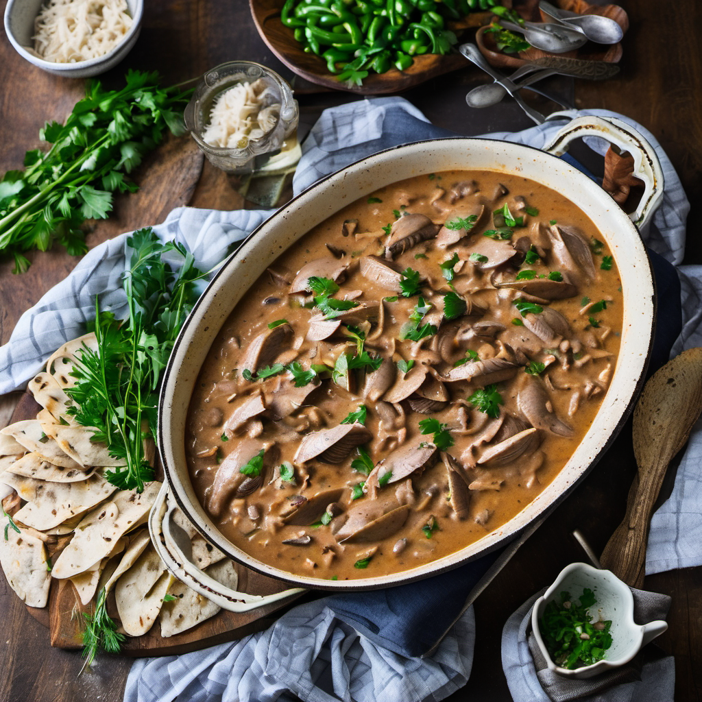

Tatugonoffe
Apresentamos uma releitura sofisticada de um clássico da culinária, nosso Estrogonofe de Tatu. Este prato exclusivo é elaborado com cortes nobres de tatu, meticulosamente marinados e cozidos até atingir a perfeição. O tatu, com sua carne tenra e sabor delicado, é envolto em um molho cremoso à base de creme de leite fresco, vinho branco de safra especial e um toque sutil de mostarda de Dijon.
Acompanhando essa iguaria, uma redução de cogumelos silvestres, selecionados a dedo para complementar a riqueza do prato, trazendo um equilíbrio harmonioso entre terra e mar. O molho é finalizado com um toque de páprica defumada e um leve perfume de conhaque, elevando ainda mais a experiência gastronômica. Cada elemento deste Estrogonofe de Tatu foi cuidadosamente harmonizado para proporcionar uma experiência culinária inesquecível, um verdadeiro tributo à inovação gastronômica e à exploração de novos sabores.